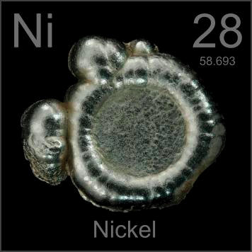

HOME
PREVIOUS
NEXT

Nickel
Atomic Weight: 58.6934
Density: 8.908 g/cm3
Melting Point: 1455 °C
Boiling Point: 2913 °C
These buttons, created by electrowinning, are the main form in which pure nickel is sold commercially. A typical use is in electroplating baths, where they are slowly dissolved and redeposited on products.